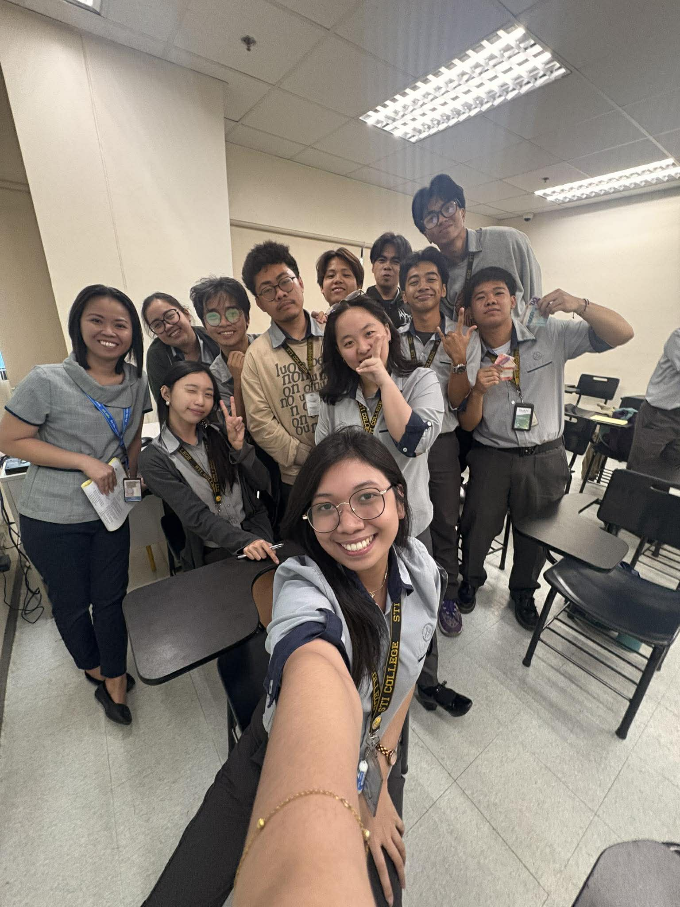
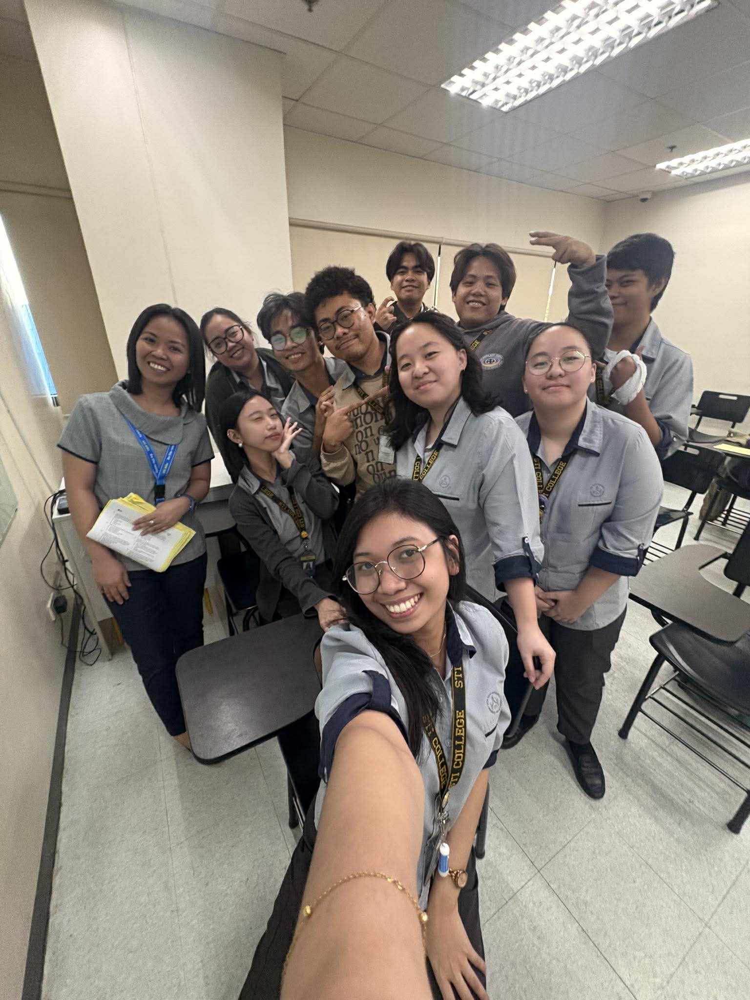
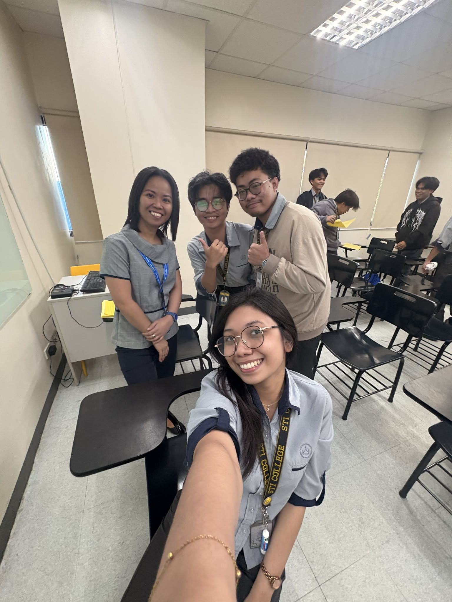
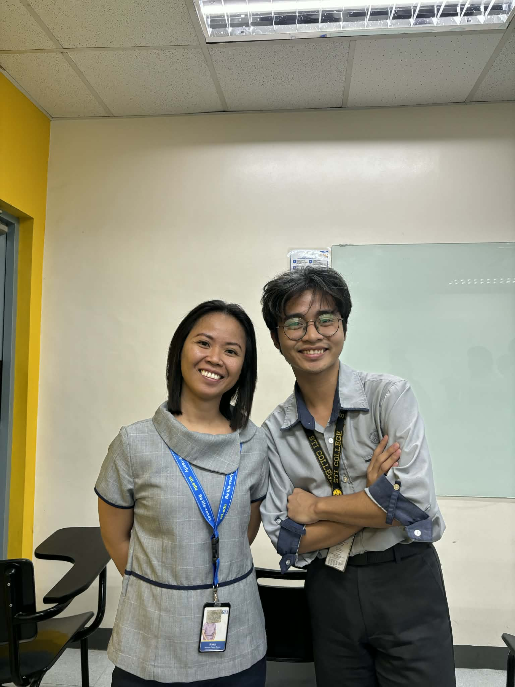

Everyday Justice: A Weight I Didn't Expect
Ma'am Delos Reyes said that justice isn't just for criminals—it lives in our hallways, our friendships, and our daily choices. But what happens when that kind of justice isn't fair? This is the story of a lesson that changed how I see the world, and the unexpected weight that came with it.
Situation or Experience
Lahat ng discussion namin sa Ethics, talagang may matutunan ka, sobrang ganda talaga kung paano ipaunawa samin ni ma'am yung lesson, from Introduction of Ethics up until Justice. I've realized how lucky I am to be able to attend Ma'am Delos Reyes's class every session. ayaw ko rin kase na mamissed ko yun. I am so happy for the first team nailabas ko yung lungkot ko about sa ginawa ko as representative na isumbong yung cheating, nailabas ko siya through activity about key branches of Ethics (such as Normative, Metaethics and Applied) under po nong Applied, sinabi ko yun, because I knew It is my job as representative to do that. But this journal wasn't focused on that. On February 8, after the discussion of Moral Theories (Consequentialism, Deontology, Virtue Ethics), Ma'am introduced the new topic which is 'Justice'. She asked us how we can define justice, and each of us gave a word associated with it. Ang unang pumasok sa isip ko ay "only rich people can afford" because that's how the reality works, kahit ayaw pa natin. Since my classmates gave a positive word, I also gave the word 'Rules'. But after we gave our words, Ma'am pointed out that justice is not only invoked when someone is killed, r*ped, or when actions lead to the destruction of someone—it should be present in our everyday lives. That's when it struck me. Kase ang nasa isip namin while giving the definition of Justice is always derive from that situation called crime. pero hindi pala, dapat lagi tayong meron nito, at hindi to yung tipo na dapat hinihingi lang natin lagi, dapat if tayo yung nakagawa ng mali, we should be the who gave justice don sa tao na yun. Imagine if lahat ng tao responsible and know justice very well, edi sana hindi tayo nagkakagulo ngayon. Ang sakit lang na itong discussion na to ay nagpabalik sakin don sa situation when I spoke up about the cheating issue, I knew I was being bullied by them—especially by those involved—and I never asked for justice. Kase akala ko inaask lang to kapag matindi yung nagawa.
Emotions & Cognitive Response
After that discussion, lahat ay bumalik sakin. Lahat nong sakit, inis, galit, Because I chose to stay silent despite sa mga simpleng banat nila. But I have to remain calm and just process everything, baka naguluhan lang ako or maybe mad kase nga hindi ko nakuha yung justice na need ko, yung issue na yun humupa, and those students involved never received any punishment. Andami ko kayang sinacrifice don, isa na yung trust nila sakin as representative, also yung bond na naubo nag fade away na, since nahati rin kami ng side, may ilan nagsabi na mabuti daw yung ginawa ko, kase nga daw naman sobra na, gumagamit ng cellphone while taking examination ay mali talaga, and then they are justifying those actions, na kaya daw nila nagawa yun kase gusto nilang mag survive, likee whatt?? paano naman yung ibang classmate namin na piniling mag aral at paghirapan yung scores nila, tsaka some of them are saying, tanggap nila na babagsak sila, I really want to help them, kaso wala ring time. Pero sila na nag cheat to survive?? sobrang unfair talaga non. Tapos ako pa ang nagmukhang masama sa iba, kase snitch daw ako HUHUHUHU pero kahit na ganon I will still stand on my core, lalo na at representative ako that time, applied ethics ko yun. kahit na ibalik ako sa ganoong situation, magsusumbong pa rin ako. Kaya naman namin mag tulungan e, nakikita nga rin po ni Collo yun e, pero wala e, ibang way yung pinupursue nila.
SEL Insight
That discussion served as a lesson in social awareness and responsible decision-making. Before, I thought justice was only for people who committed crimes—but no, it should be upheld by everyone and practiced in our everyday lives.
Aside from what I experienced, I've also witnessed injustices in other places: on social media platforms, on TV, within circles of friends, and even here at STI. Injustices happen around us, and we should be aware of them. We should fight for what is rightfully ours.
As for responsible decision-making, after that discussion, I decided to remain calm and process everything that happened—because I knew that was also my responsibility. We should be responsible lalo na sa mga desisyon natin sa buhay. As a student proper decision making is a must, sa mga activity na pwedeng mamissed or sa course na pwedeng bumagsak dapat bigyang hustisya natin yun, by making the right decision in life.
Personal Reflection
I learned a lot of lessons because Ma'am involved real-life scenarios. Also, this lesson stood out to me because, before, the topic of justice often felt shallow—just its definition and importance written on the page. But Ma'am gave us a wonderful and impactful meaning of justice. This discussion was so meaningful, and it's one I will never forget. So many lessons came up, and it brought back a lot of memories. I just hope that we will truly achieve justice. Even if I didn't receive it before, that's okay—I just hope that no one else has to experience the same thing. To those who manipulate or buy justice, I hope you face the consequences meant for you, and to those who have never been given justice, I hope you finally receive the true justice you deserve. Let us fight for what is ours. We should also be mindful of our actions, because they affect one another. Let us remember that justice is within us—not only for those who hold power. We can still change the world; we just need to take that first step.
Visual Documentation


More Than a Lesson: The Weight of Ethics
Ms. Delos Reyes once told us that ethics isn't just found in textbooks—it lives in our reactions, our silences, and the things we choose to speak up about. But what happens when the lessons hit closer to home than you expected? What happens when a documentary, a journal entry, and a final meeting force you to confront not just theories, but yourself? This is the story of how one term in Ethics became more than a subject—it became a mirror.
Situation or Experience
Today, my journal entry is about our last meeting for the Midterm. That day was a bit sad because it was also the last day of Ms. Delos Reyes in our Ethics class. She will be moving on to handle other responsibilities. While working on our final activities, I found myself reflecting on all our discussions from the Prelim up to the Midterm. Honestly, almost everything stuck with me. We talked about the branches of Ethics such as Applied Ethics, Metaethics, Normative Ethics, Moral Reasoning, and Moral Dilemmas. We also dove deep into Consequentialism, Deontology, Virtue Ethics, and Justice. What made these lessons stick was how engaging our discussions were, mainly because Ma'am always included real-life examples that made the theories relatable.
Now that we're in the Midterm, one of the topics that truly impacted me was the contrast between Ethical Absolutism and Ethical Relativism. I’ve come to understand that we must respect the differences in each other's cultures. However, I also found myself wrestling with complex emotions, especially regarding the example Ma'am gave about the documentary "Kapalit ng Katahimikan" by Kara David. It was about a young girl who was raped, and to "resolve" the trauma, she was forced to marry her abuser because it was part of their tradition. It was heartbreaking. From the lens of Ethical Relativism, we might not have the right to say they are wrong because it’s their cultural practice. But from the perspective of Ethical Absolutism, the act of abuse is fundamentally wrong. That documentary really made me stop and think.
Of course, Ethical Relativism isn't always negative. For example, eating insects is a normal source of protein in some cultures, even if it is viewed with disgust in Western countries. Ideally, relativism shouldn't be used to justify harming others. I also learned a lot about Business Ethics; since I plan to own a company someday, understanding how to handle different aspects of a business ethically is very valuable. Lastly, Environmental Ethics stood out to me. As Ma'am said, it's often just common sense, like throwing your trash in the proper container, but these simple actions are the ones we tend to neglect. Answering the activities for these topics pushed me to reflect deeply and explain my answers to the best of my ability.
Emotions & Cognitive Response
It's undeniably sad that this was our last meeting with Ms. Delos Reyes. She was one of the teachers I genuinely hoped would handle our class again. With her, I felt a sense of peace in the classroom; everything was organized, and everyone willingly followed her rules. She created a safe and respectful environment. But I also understand that she needs to attend to her other tasks, and it would be difficult for her if she didn't let us go. Because of that, I really gave my best in our final activities. I wanted to end the term on a high note and show her that her efforts in teaching us were not wasted. I poured my thoughts and understanding into every answer as a way of saying thank you.
Looking back, I realize how deeply the topics we discussed affected me emotionally. When we first tackled Moral Dilemmas, I felt a mix of confusion and curiosity—it was challenging to wrap my head around situations where both choices seem wrong. But as we went deeper, especially into Consequentialism and Deontology, I started to feel more engaged. I found myself imagining, "If I were in that situation, what would I do?" That mental exercise was both exhausting and exciting at the same time.
However, the topic that truly stirred something heavy in my chest was Justice, particularly when connected to the documentary "Kapalit ng Katahimikan." While we were discussing the theories, I felt intellectually stimulated. But when Ma'am showed us that real-life example, my emotions shifted entirely. I felt a lump form in my throat. I was angry, confused, and deeply saddened. How could something so unjust be accepted as tradition? How could these young girls be forced to marry their abusers in the name of "resolving" the issue? It didn't sit right with me. I wasn't just learning about injustice anymore—I was feeling it. That was the moment I realized that Ethics is not just an abstract subject; it is about real people, real pain, and real consequences.
On a lighter note, I also felt a sense of excitement and hope when we discussed Business Ethics and Environmental Ethics. Thinking about applying these principles to my future company made me feel inspired. It gave me a sense of purpose, knowing that I now have the moral groundwork to build something that is not only successful but also ethical and responsible. The simple reminder about throwing trash properly, which Ma'am said is often neglected, actually made me feel a little guilty—because she was right. I’ve neglected it too. But instead of just feeling bad, I felt motivated to change
Overall, this class made me feel a full range of emotions—confusion, anger, sadness, guilt, inspiration, and gratitude. And I think that’s what made it special. It wasn't just a lecture; it was an emotional and intellectual journey. And I’m thankful that Ms. Delos Reyes was our guide through it.
SEL Insight
Reflecting on this, I can relate our experience to my Relationship Skills, especially with Ms. Delos Reyes. Although we didn't get to be her students until the Finals, I am still happy because of how much we learned from her. She was actually the only person I felt comfortable enough to confide in about something I had been keeping to myself for a long time—an issue about cheating. For the longest time, I carried that weight silently. From the outside, people thought what I did was fun or playful, which is why those involved never faced proper consequences. Nobody really understood the moral conflict I was feeling inside. I felt stuck between knowing something was wrong and watching it be treated lightly by others. But in Ms. Delos Reyes' class, especially through the journal she required us to write, I finally found a safe space to let it out. I poured my heart into that entry, not expecting much in return. But when she gave back her feedback, her message was so meaningful and addressed my feelings with such care and understanding. For the first time, I felt heard—not judged, not dismissed, but truly heard. That moment strengthened my belief in the importance of having at least one person you can be vulnerable with, and it taught me how powerful a teacher-student relationship can be when built on trust and respect.
This also connects deeply to my Social Awareness. The example Ma'am gave about "Kapalit ng Katahimikan" opened my eyes to a reality our whole class was unaware of. We were all shocked because we had just been discussing Justice, yet those victims experienced profound injustice, all in the name of tradition. I remember sitting there, completely silent, trying to process how something so painful could exist quietly in another part of our country. It made me realize how easy it is to stay inside our own bubbles, unaware of the struggles others face. That lesson didn't just teach me about cultural relativism—it forced me to look outside myself. I started thinking about the communities I don't see, the voices that don't reach the mainstream, and the traditions that continue not because they are right, but because no one has stopped them. It challenged my perspective and made me more sensitive to the hidden realities around me. I learned that being socially aware means being willing to listen, to question, and to care beyond what is familiar. And that is something I will carry with me long after this class ends.
Personal Reflection
This entire journey in Ethics, under the guidance of Ms. Delos Reyes, has been more than just an academic requirement; it has been a lesson in humanity. I’ve learned that ethics is not just about knowing what is right or wrong based on a book, but about navigating the gray areas with empathy and critical thought. The conflict I felt regarding the documentary taught me that while we must respect cultural differences, we should also hold space for compassion and question practices that cause suffering. Moreover, my personal interaction with Ma'am showed me the power of having a safe space to be vulnerable. It reminded me that teachers can be more than just educators; they can be mentors who help us process our own moral dilemmas. As I move forward, I will carry these lessons with me—not just the theories of Deontology or Virtue Ethics, but the real understanding that behind every ethical issue, there are real people, real feelings, and real consequences. Ms. Delos Reyes may be leaving our classroom, but the ethical foundation she helped build in us will stay.
Documentation




Prefinal Journal
This section will unlock at the start of prefinal period
Expected: April 2026Final Journal
This section will unlock at the start of final period
Expected: May 2026